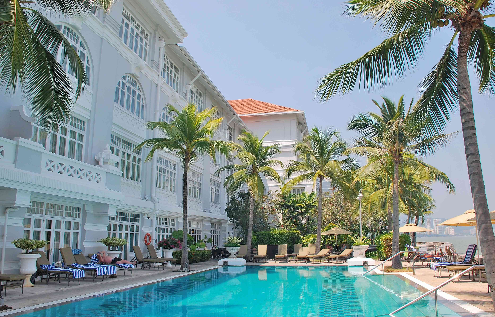
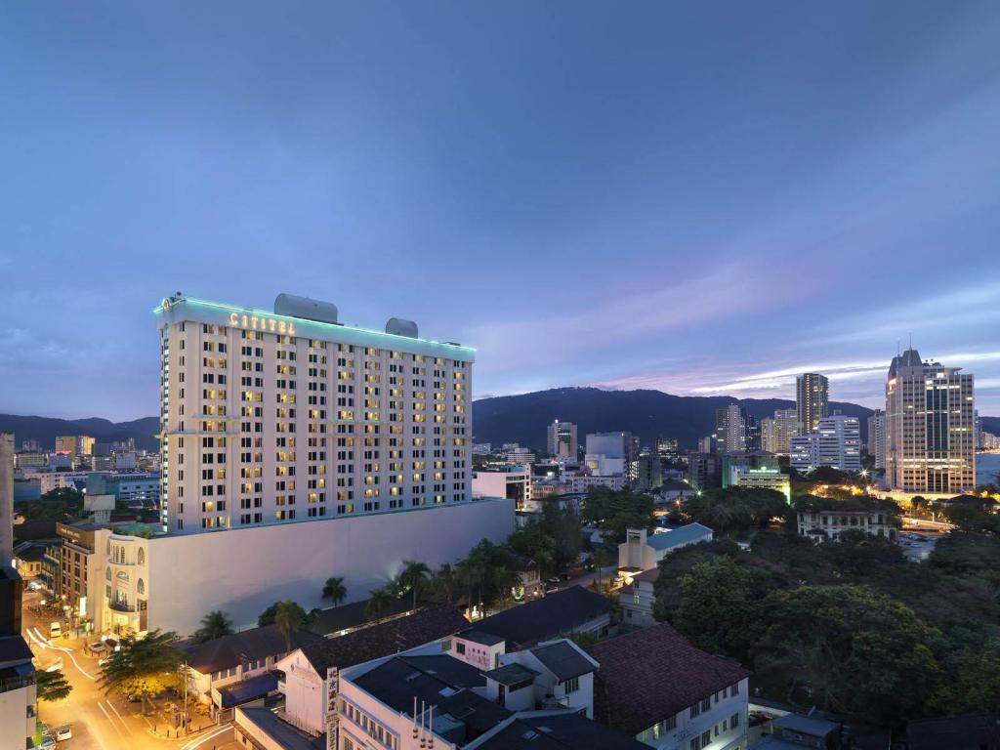
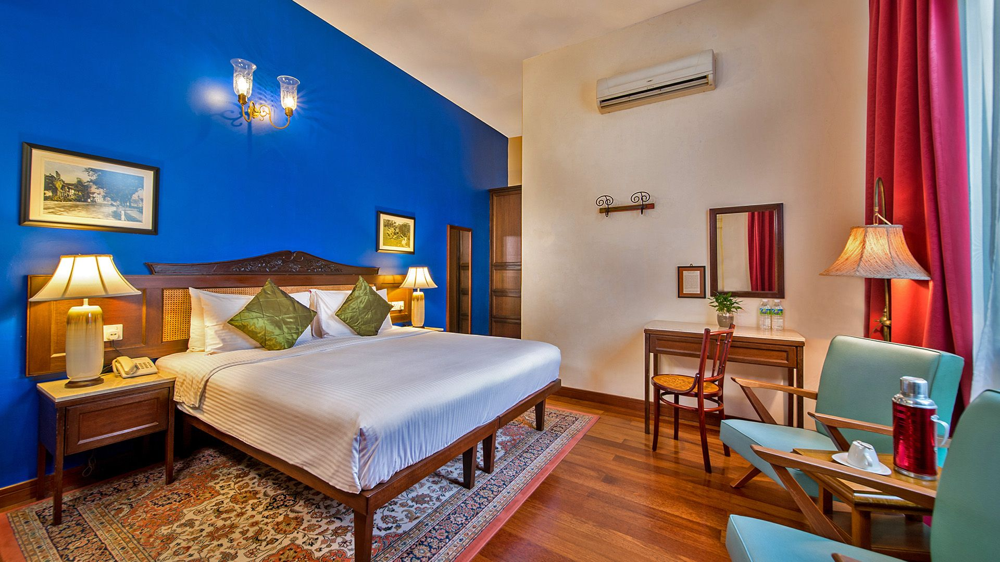
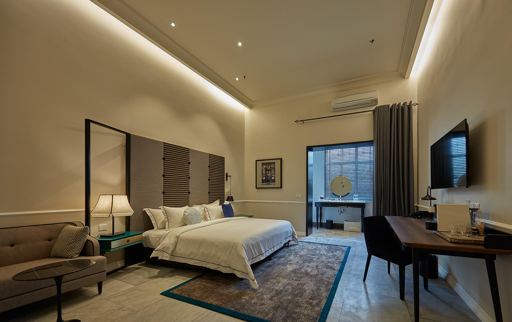
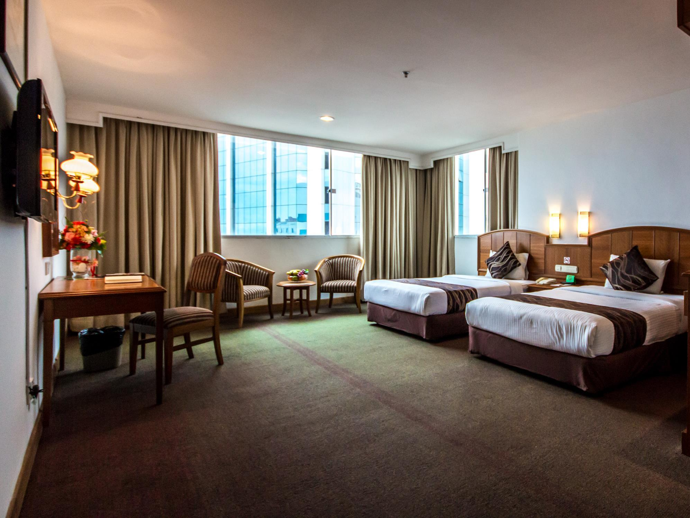
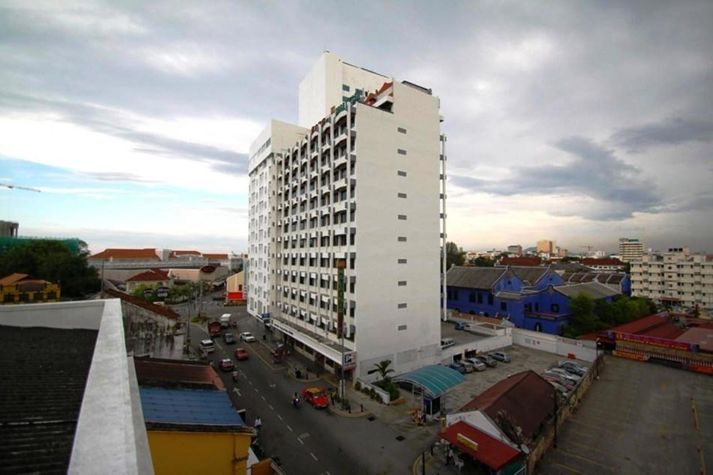

☰ Menu
Hotel
Many hotels in Penang offer first class accommodation in
Georgetown, making this hotel an ideal base for your stay in the city. Penang Road is the heart of
the Georgetown entertainment district, within walking distance of most of Georgetown's tourist
attractions and many restaurants, bars, clubs and shopping venues, making it an ideal choice for
leisure travelers in Penang. There are many hotels to choose from on this road and the surrounding
streets, suitable for any budget, from cheap hotels to top luxury traditional accommodation.
Eastern And Oriental Hotel Georgetown Penang - 5Star

Penang’s most famous hotel, E&O, is located at the end of Penang Road, opposite the pedestrian zone of
the bar and club. If you are looking for accommodation, then the iconic Oriental and Oriental Hotel
Penang is the best place to stay. The ancient colonial charm of Georgetown is listed as a World Heritage
city by UNESCO.
Cititel Hotel Georgetown Penang - 4Star

Strategically located in Georgetown, this luxury hotel offers quality accommodation in Penang Road, one
of Penang's main tourist areas. This high-rise hotel has a total of 451 rooms spread over 16 floors. The
rooms include standard, superior and deluxe rooms with one king bed or twin beds. All rooms are equipped
with air conditioning, ceiling fan, satellite TV and in-house movies, free broadband Internet access,
tea/coffee making facilities and mini fridge.
Yeng Keng Hotel Penang - 4Star

A small boutique hotel in Penang, Yeng Keng Hotel is housed in a beautifully restored 19th-century
building on George Town’s famous Chulia Street, just steps from most of the city’s old attractions.
Remotely. This quality Heritage hotel in George Town, Penang offers 20 rooms including double, double,
twin and family rooms, 4 suites, 1 garden suite, 2 Choria Suites and 1 famous hotel. Hotel. Yeng Keng
Suite.
The Edison Hotel George Town Penang- 3.5Star

A short walk from Penang Road in Lebuh Leith, Edison Penang Hotel is a recently refurbished Heritage hotel
in a carefully restored former colonial mansion that was once home to the old Cathay Hotel. Since the
establishment of the Cathay Hotel, the building has undergone extensive restoration, restoring its former
glory and gracefully extending the original building.
Hotel Continental Georgetown Penang - 3Star

The 3-star Penang Continental Georgetown Hotel is located opposite the entertainment district on the
upper reaches of Penang. There are many bars in the pedestrian zone, and due to its location, it is
close to the city's nightlife and is a popular accommodation. And tourist attractions. The hotel offers
over 200 affordable rooms including Superior Rooms, Super Deluxe Rooms and Executive Suites. The room
offers a variety of courses: Superior Room with 1 double bed or 2 single beds, Deluxe Room (2 single beds),
Grand Deluxe Room (double bed) and Executive Suite.
Hotel Malaysia Georgetown Penang- 3Star

Located next to the Continental Hotel, the 3-star Hotel Malaysia Penang is located on Penang Middle Road,
in the heart of Georgetown's main entertainment district. The hotel offers 126 rooms including standard
rooms (king size beds), superior rooms (twin beds) and deluxe rooms (two double beds). There is a restaurant
on site, Aberdeen cafe and restaurant, massage room and karaoke (KTV) lounge.